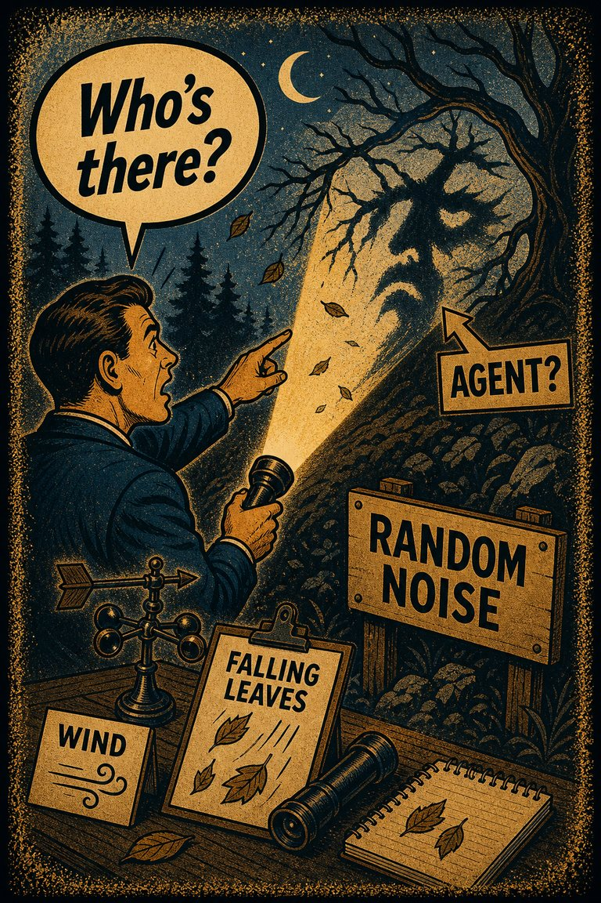
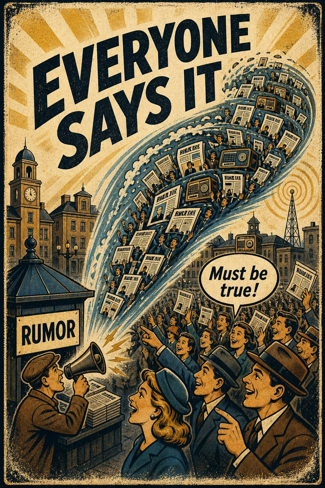
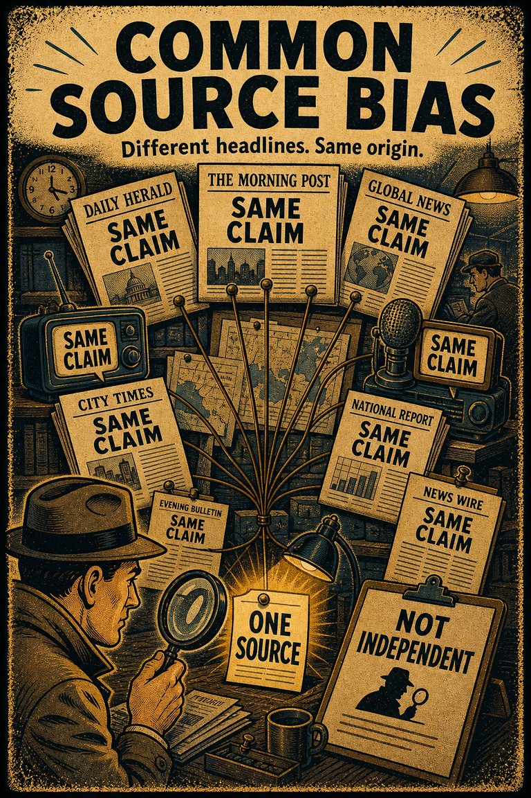
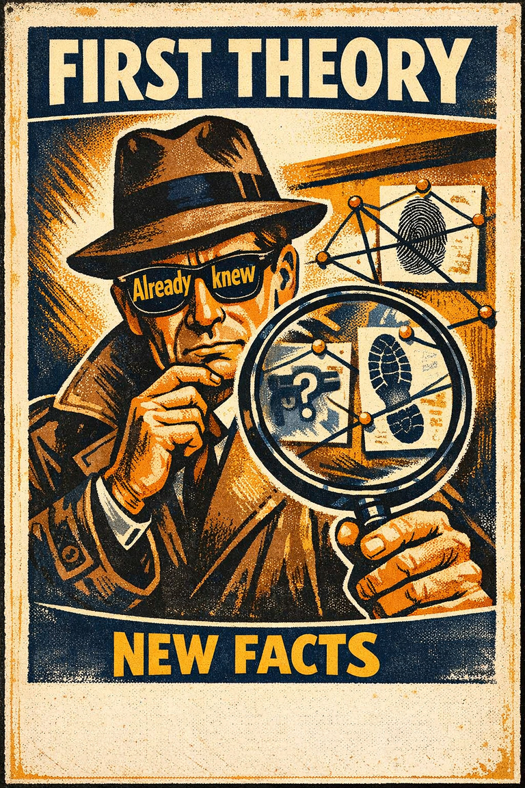
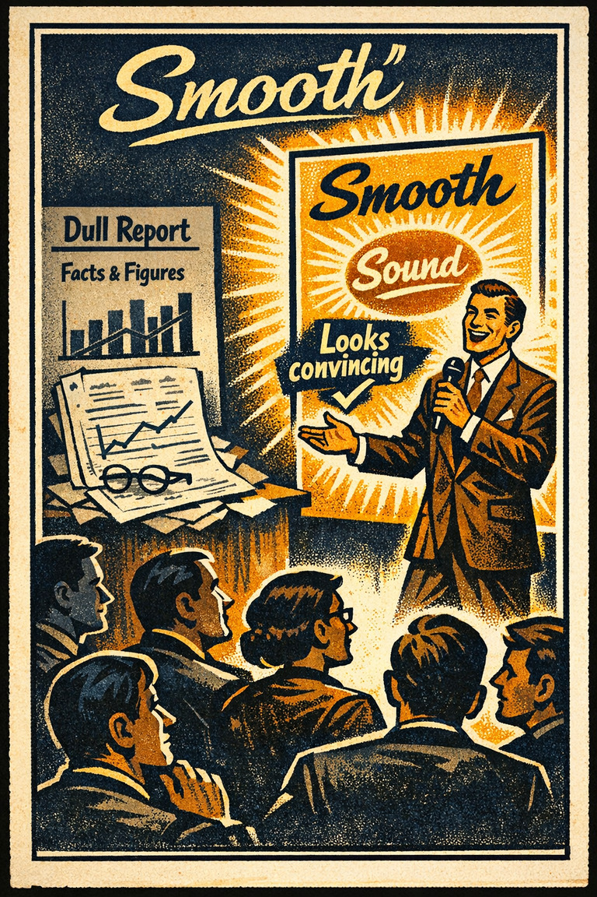
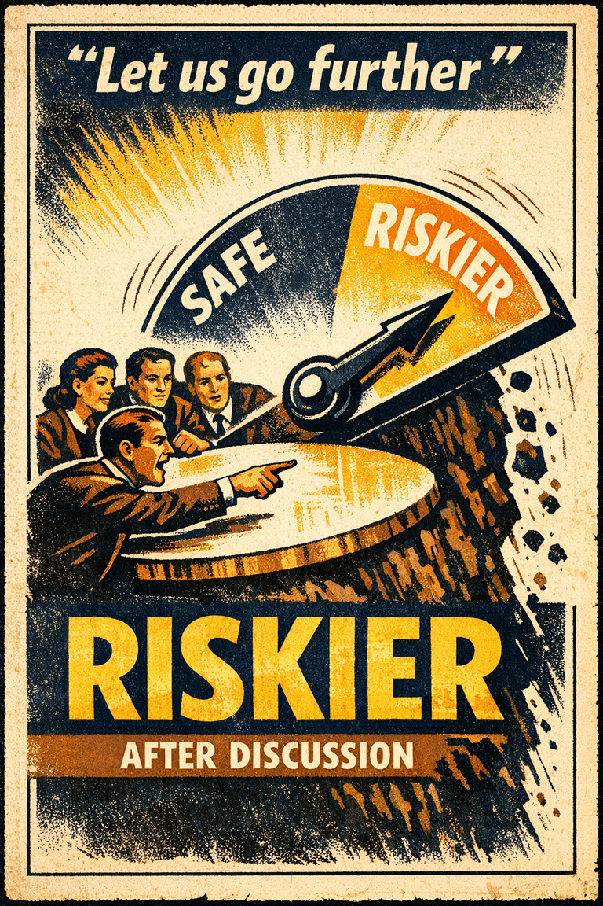

Common in identity conflict
84
Especially strong where values, self-image, and behavior collide.
Rare
Frequent

Cognitive Biases
A practical cognitive-bias site with clear definitions, learning paths, assessments, self-audits, and debiasing tools.
Cognitive Bias
The perception of contradictory information and the mental toll of it
What it distorts
Biases that skew how people interpret evidence, test explanations, and evaluate claims.
Typical trigger
Situations where hypothesis assessment is already difficult and the association cue feels easier to trust than a fuller review.
First countermove
Start with the hypothesis assessment question instead of the first intuitive answer, then check whether the association pattern is doing invisible work.
Coverage depth
Catalog entry
What contradiction am I trying to tidy up before I have really examined it?
Wikipedia groups this bias under hypothesis assessment and the association pattern, which suggests a distortion driven by the mind overweights resemblance, proximity, vividness, or intuitive linkage.
These are classroom-facing editorial estimates for comparing how the bias behaves in use. They are teaching aids, not measured statistics.
Common in identity conflict
84
Especially strong where values, self-image, and behavior collide.
Easy to spot from outside
36
Often hard to see because the repairs feel like ordinary explanation from inside.
Easy to innocently commit
89
Coherence repair can feel more like sanity than like distortion.
Teaching difficulty
54
A core concept that becomes much clearer through concrete cases of self-justification.
This comparison makes the hidden pull easier to see before the technical label has to do all the work.
Biased move
This is like hearing two notes clash and reaching for any chord that makes the tension stop, whether or not it is the right music.
Clearer comparison
Relief from tension is not the same thing as truth. Contradiction sometimes needs to stay visible long enough for the real revision target to become clear.
Do not use this label for every uncomfortable disagreement. The issue is a psychologically costly inconsistency that starts motivating reinterpretation, justification, or selective updating.
Use this label when people are relieving the discomfort of contradiction by changing stories, standards, or memories rather than confronting the inconsistency directly.
Use the quick check, caveat, and nearby confusions together. The fastest diagnosis is often the noisiest one.
Each example changes the surface context while keeping the same hidden distortion in place.
Someone who sees themselves as health-conscious starts rationalizing a recurring habit that clearly conflicts with that identity.
A team that values evidence finds itself defending a favored project and slowly changes the story about what counts as evidence.
People confronted with a contradiction between identity and fact often start modifying the meaning of one side rather than accepting the tension plainly.
Conflicting commitments create pressure that makes reinterpretation, justification, or attitude shift feel easier than holding the contradiction in the open.
Teaching note: This entry helps explain why people do not merely hold bad views; they often actively reorganize belief and memory to reduce psychological tension.
The strongest debiasing moves change the process, not just the label.
State the contradiction in plain language before deciding which part should move and which part should stay.
Create space where revising a stance does not require total humiliation or identity collapse.
Preserve written values, assumptions, and commitments so later reinterpretation has to confront the original record.
Practice And Repair
Cognitive dissonance is the pressure field around inconsistency. Many later biases can be understood as ways of reducing that pressure without openly admitting the revision.
Belief, behavior, identity, or evidence stop fitting together cleanly.
The tension feels expensive enough that some fast repair becomes attractive.
Interpretation, memory, or standards shift to restore coherence more cheaply than direct revision would.
Name the conflicting commitments explicitly and ask which one really deserves revision rather than patching the contradiction indirectly.
Which part of this tension would I revise if reducing discomfort were not allowed to make the choice for me?
Spot It
Slow It
Reframe It
These are nearby labels that can share the same outer appearance while differing in what actually drives the distortion. Use the overlap, the distinction, and the diagnostic question together before settling the call.
Why compare it: Motivated reasoning moves standards to protect desired conclusions; cognitive dissonance names the inner tension that often motivates those moves.
Why compare it: Choice-supportive bias edits memory after choosing; cognitive dissonance is the broader conflict pressure that can trigger those repairs.
Why compare it: Self-serving bias distributes credit and blame in ego-friendly ways; cognitive dissonance is the discomfort when beliefs, identity, and behavior stop fitting cleanly together.
These are useful when the label seems roughly right but the process change still feels underspecified.
What two commitments are currently in tension here?
How am I relieving the discomfort of contradiction right now?
What would it look like to keep both sides of the conflict visible without rushing to tidy them up?
These sourced cases do not prove what was in someone's head with perfect certainty. They are teaching cases for showing where the bias pressure becomes visible in practice.
Effort-justification and dissonance reduction research
Classic dissonance research shows that people often revise attitudes or rationales after costly effort or contradictory behavior in order to reduce inner inconsistency.
Why it fits: The repair is aimed at restoring coherence, not merely at discovering a neutral truth.
Wikipedia · Modern social psychology
When Prophecy Fails and doubled-down belief
Festinger's famous case study described believers who responded to disconfirming prophecy not simply by abandoning it, but by reinterpreting events in ways that restored coherence and commitment.
Why it fits: Contradiction created pressure for belief repair rather than straightforward revision.
Wikipedia · 1956
Use these sources to move from the teaching page into the underlying literature and seed reference material. The site is still written for clarity first, but the stronger pages should also be traceable.
The classic forced-compliance experiment behind many modern lessons about attitude change after inconsistency.
Seed taxonomy and broad coverage are drawn from Wikipedia's List of cognitive biases, then editorially reshaped into a teaching-first reference.
Once you know the bias, these nearby tools help you use the page in a real workflow rather than as a static definition.
Curated sequences where this bias commonly appears alongside a few predictable neighbors.
Short audits you can run before the distortion hardens into a decision, a verdict, or a post-hoc story.
Bias-aware AI prompts that widen the frame instead of simply endorsing the first preferred conclusion.
A mixed scenario set that can quietly pull this bias into the question bank without announcing the answer in the title first.
These links widen the frame around the bias without interrupting the core lesson on this page.
A theory essay on how people defend choices, identity, and coherence by editing memory, standards, and self-description rather than by simply declaring that they refuse to change.
CogBias theory
These neighbors were selected from shared categories, shared patterns, and explicit editorial links where available.

The inclination to presume the purposeful intervention of a sentient or intelligent agent.

A belief becoming more plausible through repeated public repetition, social uptake, and feedback.

The tendency to combine or compare research studies from the same source, or from sources that use the same methodologies or data.

Initial beliefs and knowledge which interfere with the unbiased evaluation of factual evidence and lead to incorrect conclusions.

The tendency to treat ideas or options that feel easier to process as better or truer.

The tendency for decisions to be more risk-seeking or risk-averse than the group as a whole, if the group is already biased in that direction.